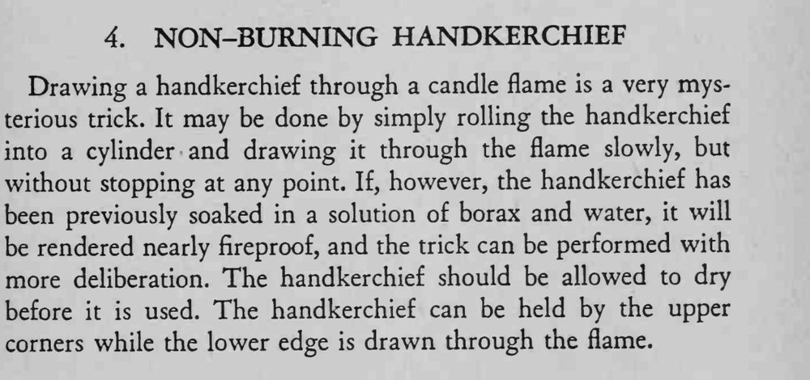

魔术师把手帕从蜡烛火焰中慢慢拉过，手帕却一点都没有烧着。
溶液浸泡后必须完全晾干，否则手帕仍会被烧焦。

Drawing a handkerchief through a candle flame is a very mysterious trick. It may be done by simply rolling the handkerchief into a cylinder and drawing it through the flame slowly, but without stopping at any point. If, however, the handkerchief has been previously soaked in a solution of borax and water, it will be rendered nearly fireproof, and the trick can be performed with more deliberation. The handkerchief should be allowed to dry before it is used. The handkerchief can be held by the upper corners while the lower edge is drawn through the flame.